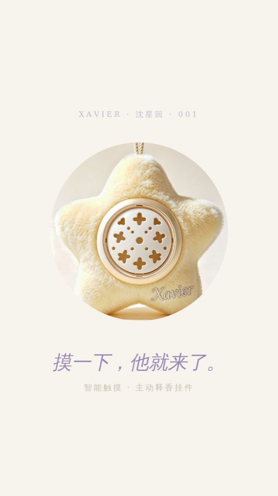
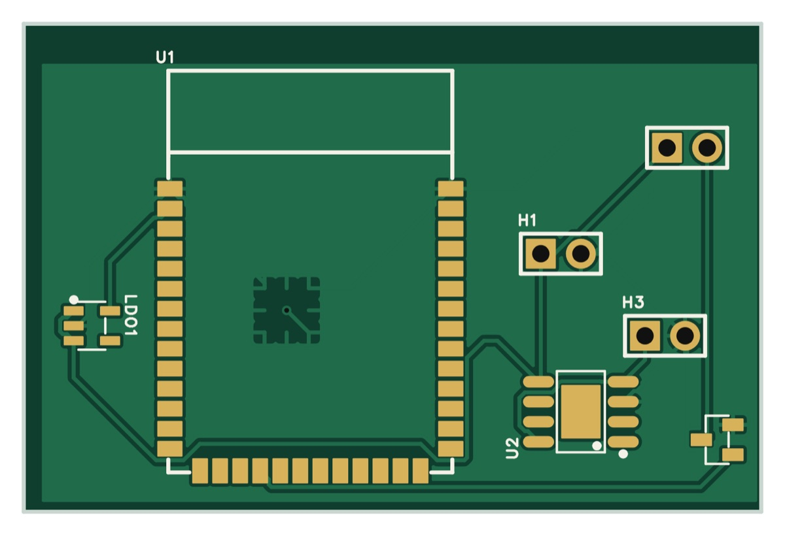
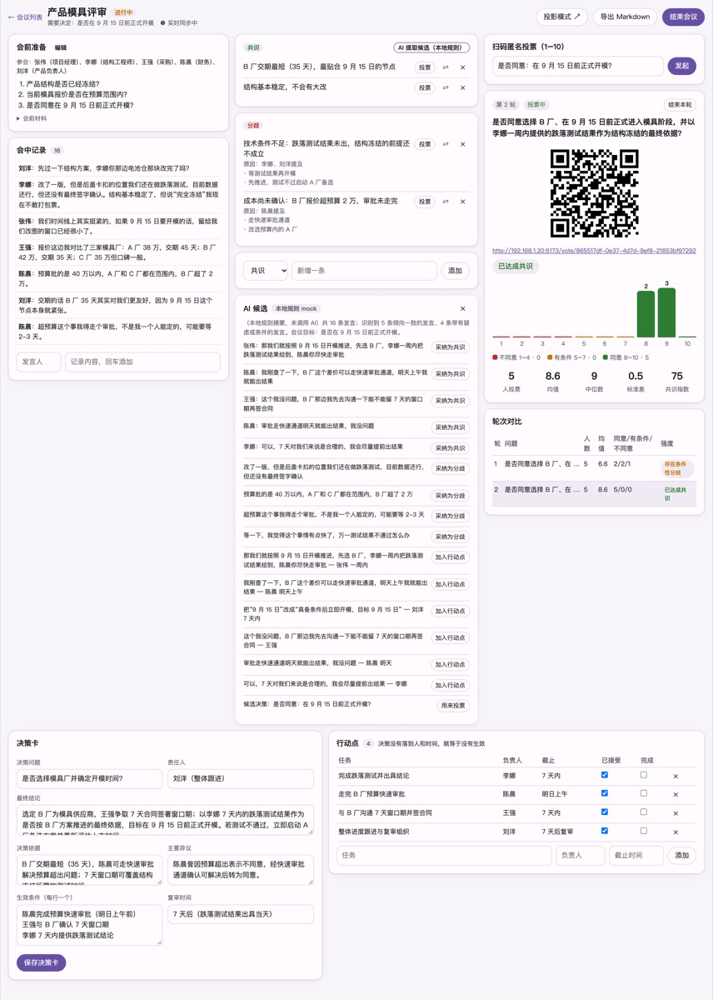

代表项目
盲手 Blinder's Hands
AdventureX 2026 · 松灵机器人赛道 · 视觉 × 七轴机械臂 × 语音
一只会自己找角度的手，替视障者看清药盒上的每一个字。
- 药盒上的有效期常印在最偏的一面。视障者能用手机读字，却不知道该对准哪一面；盲手补上的是“手”。
- 主动视觉闭环：端侧文字检测每一帧评估画面（有没有字、偏了没有、歪了没有、清不清楚），直接驱动腕部微调和下一个视角的选择，可部署在地瓜 RDK 的 BPU 上。
- 视觉抓取：深度相机点云分割物体，估计位置、朝向和尺寸，自主规划抓取；ArUco + Kabsch 手眼标定。
- 七种任务：查有效期、读用法、回答“孕妇能不能吃”、整理药箱、一句句引导使用者的手、递到手边；限速、碰撞保护、语音急停。32 个自动化测试。
Xavier 智能气味挂件
已交付 · 浦软创业营 · ESP32-C3 硬件与固件
为虚拟角色沈星回做的智能触摸香薰挂件：一摸就释放香气。


- 自己画的 46.7×31 mm 双层 PCB；ESP32-C3 主控、电容触摸、陶瓷片加热、Qi 无线充电。
- 固件从 v1.0 迭代到 v2.0：深度睡眠 → 触摸唤醒 → 加热 → 强制冷却，带消抖和低电量保护。
- 定价 189 元，小红书一条笔记 1,416 个赞，二十多笔预售已交付。
翻个好觉 Flex & Rest
SheNicest 黑客松 · 蓝盒子命题“做一款能智能调节冷暖的睡眠产品”
很多女性在夜里一阵热醒、掀开被子、又冷醒。我想让她睡一整晚。
- ESP32-S3 采集皮肤温度趋势和被窝温湿度，建立个人基线，用状态机判断稳定 / 开始变热 / 热负荷高 / 恢复，再决定控温怎么动。
- 活动期间采集真人数据，作品获品牌官方奖项。
- 它后来成了我的公司主线：一块贴在枕头上的软垫，热了帮你凉、冷了帮你暖。
闻息 · 一款可以闻见记忆的相机
小红书黑客松 · 队长 · 视觉语义 → 气味
定格瞬间，闻见记忆。
- Insta360 拍下画面 → AI 智能体读懂场景和情绪，翻译成一份气味配方 → ESP32 通过 UDP 驱动 4 通道雾化，把这一刻“放”出来。
- 我负责智能气味模块：从多通道雾化硬件，到把大模型输出变成硬件能执行的指令。
青梅异物 AI 质检器
普宁企业走访黑客松 · 单人参赛 · 48 小时
给青梅加工线做的 AI 异物初筛：放上去，几秒告诉工人有没有异物。
- ESP32-S3-CAM 拍照上传，后端调用视觉大模型判断，结果当场显示在 OLED 和三色指示灯上，电池供电直接放在产线边。
- 工人戴手套没法按按钮，我用灰度帧差做了“进入—停留—离开”检测，青梅放稳就自动拍照。现场跑了 213 条检测记录。
更多作品
共识终端机
让会议决策真正生效：记录共识与分歧，手机扫码匿名打分，自动算出共识强度并导出行动点。
GitHub →
私语
持续的虚拟角色关系网页，36 位真实玩家、2 笔订单。
打开网站 →
拼贴剧场
群核 Aholo 3D AI 黑客松：Lux3D 生成 3D 人物，Three.js 做成一张会呼吸的拼贴，钻进窗口就掉进下一部电影。

我怎么做事
从需求倒推技术。盲手从“视障者卡在哪一步”出发，控温垫从“她今晚能不能少醒一次”出发。
先用最便宜的方式验证。青梅质检用几十元的板子加大模型跑通了产线。
知道什么时候该停。气味挂件卖出去之后，我判断它撑不起规模，主动停掉，把精力放到更需要的问题上。
安全是设计出来的。控温有功率、时长、累计热量三道上限；机械臂有限速、碰撞保护和急停。